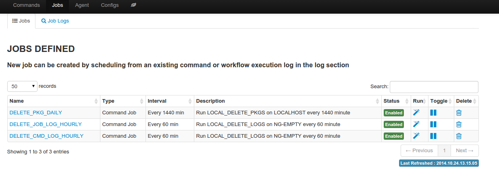
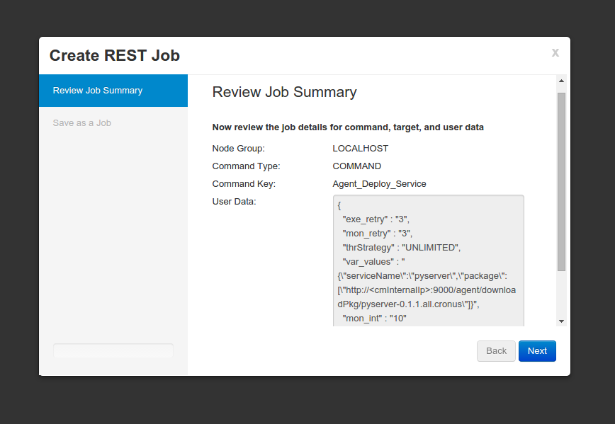
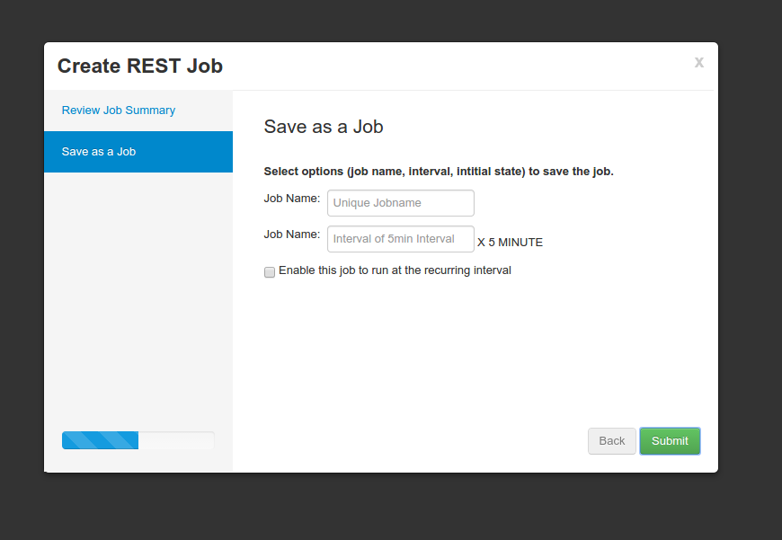

Recurring Job¶
An existing one time command job or oneclick launch can be made to run repeatly as a recurring job.
recurring jobs
Create Recurring Job
- Recurring job can be created in two ways
- Create from an existing command job from command job log
- Create from an existing oneclick launch
- Go through the recurring job wizard to define a name uniquely identified the job, and recurring frequency in the interval of 5 minutes
- Once saved, job running state can be toggled on and off from the Job page
- Job log of previously launched job can be found in job log
job wizard screen 1
job wizard screen 2
